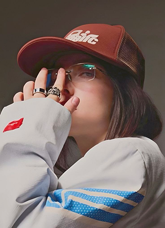

Billie Eilish Pirate Baird O’Connell was born on December 18, 2001, in Los Angeles, California, where she also grew up. She comes from a creative family: her mother Maggie Baird is an actress and teacher, her father Patrick O’Connell is an actor and musician, and her older brother Finneas O’Connell is a singer, songwriter, and producer who works closely with her on almost all of her music. Billie was homeschooled, which gave her the freedom to focus on music, songwriting, and artistic development from a very young age.
